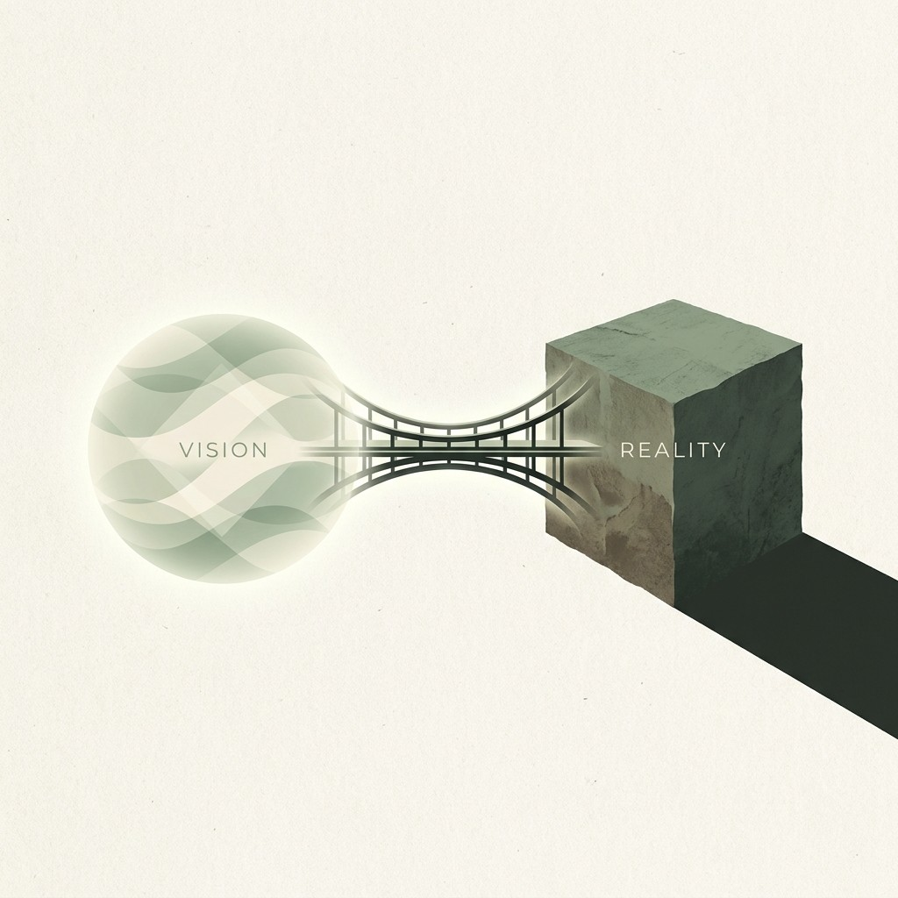

Built using Lenny's dataset
Great product advice spreads fast.
Making it work inside an organization is the hard part.
GroundWork helps teams understand whether their environment can actually support the change they want to make.
Aspiration
What are you trying to change?
Loading…

Our purpose
The gap between advice and reality.
High-quality operational advice is abundant. Teams absorb the language long before they absorb the conditions required to make change stick — incentives, coordination, trust, and pressure reshape behavior in ways the advice rarely anticipates.
GroundWork exists to bridge that gap. Not as a scorecard or a consultant's framework, but as a calm mirror for how organizations actually behave when they try to change.
The problem is not lack of ideas. The problem is creating the context for change to happen differently.
We draw on recurring operational patterns from product leadership conversations — including themes explored across Lenny's Podcast and Newsletter — to reflect what keeps showing up in real companies under pressure.
How does your org actually work today?
A few questions — not an audit. We're mapping where tends to break under pressure.
Seeing how this change behaves under pressure…
Matching patterns to your org…
Usually under 30 seconds. If it takes longer, you'll still get a result.
High confidence transformation
What You're Trying To Change
Is Your Environment Ready?
Conditions Supporting
Conditions Resisting
Tradeoffs To Name
This change can work, but it pushes against other beliefs your org may still run on:
What Usually Becomes the First Bottleneck?
Your Version
Modify
Add
Watch for
How To Drive This Change Successfully
Start With
Avoid
Introduce Later
What To Measure
Positive Signals
Warning Signs
When To Course Correct
Where This Usually Works Best
Core Organizational Insight
Operational Patterns
Expert commentary and corpus references for this transformation type.
More references
How was this report?
A quick rating and optional note help us improve GroundWork.
Thank you — we read every response.